library(crmPack)
dose_grid <- c(1, 5, seq(from = 10, to = 200, by = 1))Basic Training
March 31, 2026
Part of this training material is based on the crmPack training materials developed by John Kirkpatrick (Roche, now at Astellas). Thanks John for sharing!
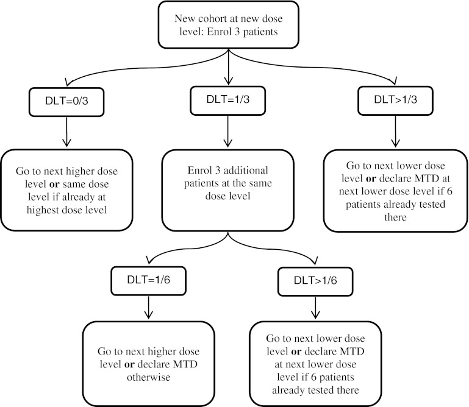
Figure taken from “Principles of dose finding studies in cancer: A comparison of trial designs”
| 3+3 | CRM | |
|---|---|---|
| Definition of a DLT | Study specific | Study specific |
| The target toxicity rate | 0.33 | Any |
| The dose grid | Study specific | Study specific |
| The cohort size | 3 | Any |
| The stopping rule(s) | 2 DLTs at same dose | Any |
| The eligibility rule | One dose up | Any |
| The escalation rule | +1 if 0/3 or 1/6 | Any |
| The definition of the MTD | Max dose with <2 DLTs | Any |
| The dose-toxicity model | None | Any |
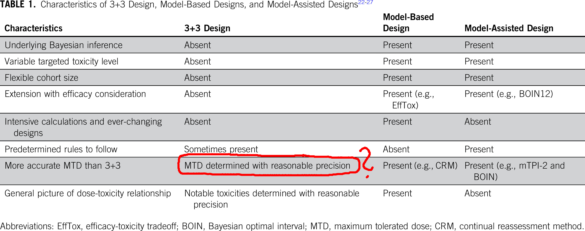
Table taken from “Moving Beyond 3+3: The Future of Clinical Trial Design”
With crmPack we aim to make it easy for everyone to use model-based designs in their dose escalation studies. The package provides:
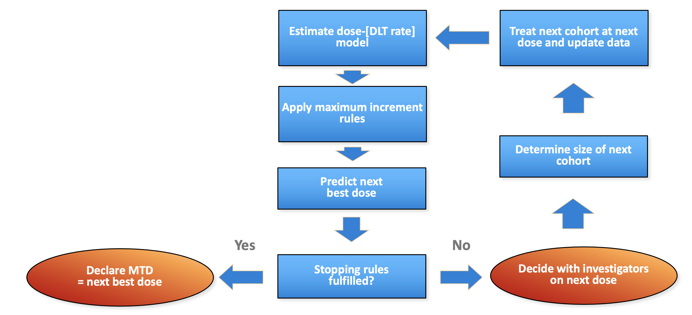
Generic flow chart for model-based dose escalation design
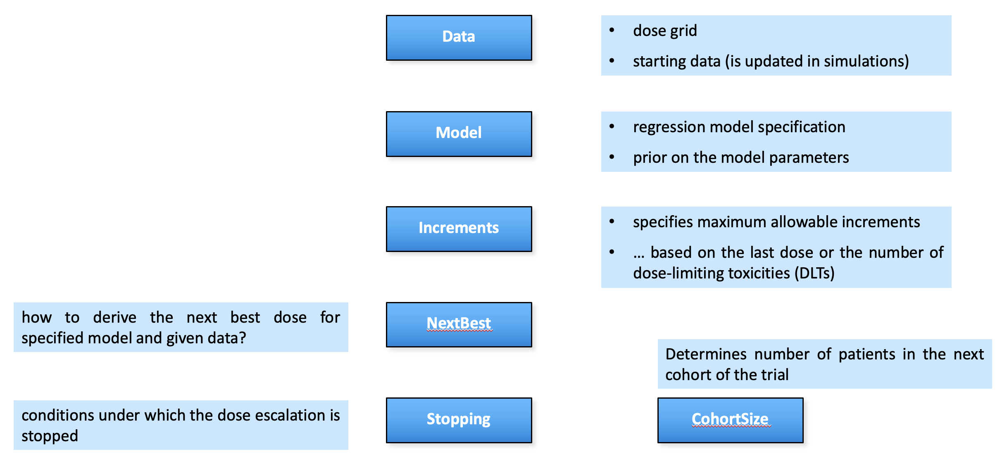
crmPack package structure parallels the flow chart
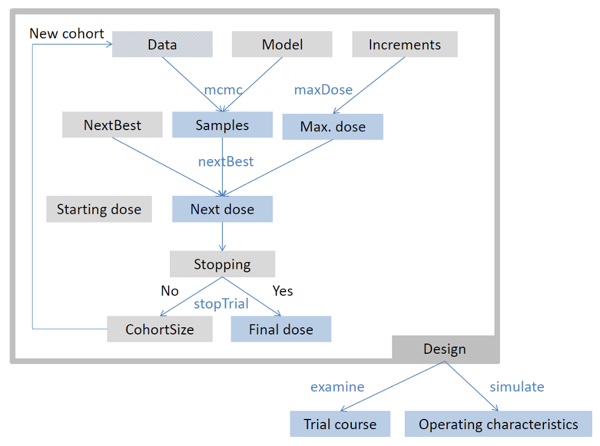
crmPack package framework
We first need to decide what the possible doses could be, i.e. the so-called dose grid:
This we use to initialize our (still empty, i.e. without patients) Data object, which will be used to store the data of our trial as it progresses:
We can “update” the Data object with the information of a patient treated at dose 10, who did not experience a DLT, and a patient at dose 20 with a DLT:
And plot it:
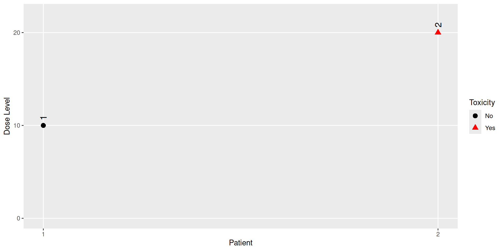
Next we need to specify the dose-toxicity model we want to use.
Often used is this logistic model with reference dose , which assigns the following probability of DLT to a dose :
Then we also use a prior distribution for the parameters and . Typically, we want to be positive, so we can assign a bivariate normal distribution to .
For example, let’s use the following model:
In Quarto/Rmarkdown, we will get the nice textual description of the model by just printing it:
We use MCMC, in particular Gibbs sampling implemented in JAGS, to generate (approximate) samples from the posterior distribution of the model parameters. The settings are controlled by the McmcOptions object. Note that in order to get reproducible results, we also need to set the random seed:
Now we can generate the prior and posterior samples with the mcmc method:
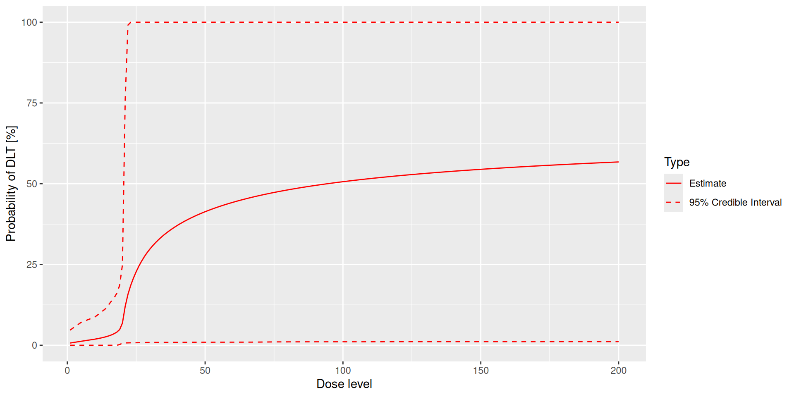
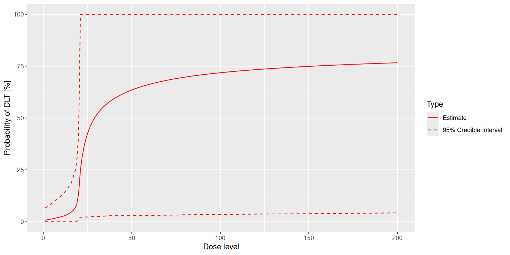
We usually need additional safety rules for our model-based dose escalation design. For example, we might restrict the maximum allowed dose increment to 100% (i.e. doubling the dose) if no DLTs have been observed, and to 50% if one DLT has been observed. This can be implemented with an Increments object:
Together with the regression model, the definition of how to obtain the recommendation for the dose of the next cohort, are the key components of the model-based dose escalation design.
For example, we can minimize the posterior expected loss while restricting the maximum overdosing (e.g. 40-100% DLTs) probability to less than 25%:
The dose recommended for the next cohort will be chosen in the following way:
Toxicity ranges and loss coefficients are given in the following table:
| Range | Lower | Upper | Loss Coefficient |
|---|---|---|---|
| Underdose | 0.0 | 0.2 | 1 |
| Target | 0.2 | 0.4 | 0 |
| Overdose | 0.4 | 0.7 | 1 |
| Unacceptable | 0.7 | 1.0 | 2 |
In the simplest case, we just always have the same constant number of patients in each cohort, e.g. 3 patients per cohort:
As with all components, other options are available, see ?CohortSize for details.
Typically there are stopping rules for a dose escalation study. In the simplest case, this is just the number of patients treated, e.g. 30 patients:
But we can also combine this with logical & and | operators with other stopping rules, e.g. to also stop if the target probability is high, or if the model would not recommend any dose at all because of safety concerns:
If any of the following rules are TRUE:
≥ 30 patients dosed: If 30 or more participants have been treated.
P(0.2 ≤ prob(DLE | NBD) ≤ 0.3) ≥ 0.7: If the probability of toxicity at the next best dose is in the range [0.20, 0.30] is at least 0.70.
Stopped because of missing dose: If the dose returned by nextBest() is NA, or if the trial includes a placebo dose, the placebo dose.
So in our data example from above, what would be the recommended dose for the next cohort?
First, the maximum increment is calculated using the maxDose method:
Here it is only 30, because we observed one DLT at dose 20, so the maximum allowed increment is 50%.
Then the next best dose is calculated with the nextBest method:
The joint plot is in the $plot_joint element of the result (target/overdose/unacceptable probabilities and expected loss for each dose):
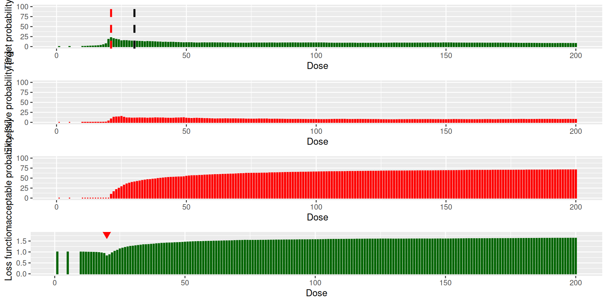
And the value is in the $value element:
So due to the high probability of overdosing at dose 30, the recommended dose for the next cohort is dose 20, which is the same as the previous cohort.
We can also use the fit() method to get the posterior quantiles, and we can combine that with the loss results to get a nice table:
| dose | middle | lower | upper | posterior_loss |
|---|---|---|---|---|
| 1 | 0.007 | 0 | 0.066 | 0.999 |
| 5 | 0.014 | 0 | 0.090 | 0.998 |
| 10 | 0.024 | 0 | 0.125 | 0.996 |
| 11 | 0.026 | 0 | 0.135 | 0.995 |
| 12 | 0.029 | 0 | 0.141 | 0.991 |
| 13 | 0.033 | 0 | 0.154 | 0.988 |
First we need to put all the components of our model-based dose escalation design together in a Design object - here we also need to define a starting dose:
A logistic log normal model will describe the relationship between dose and toxicity: where dref denotes a reference dose.
The prior for θ is given by
The reference dose will be 20.00.
If any of the following rules are TRUE:
≥ 30 patients dosed: If 30 or more participants have been treated.
P(0.2 ≤ prob(DLE | NBD) ≤ 0.3) ≥ 0.7: If the probability of toxicity at the next best dose is in the range [0.20, 0.30] is at least 0.70.
Stopped because of missing dose: If the dose returned by nextBest() is NA, or if the trial includes a placebo dose, the placebo dose.
|
No DLTs
|
||
|---|---|---|
| Min | Max | Increment |
| 0 | 1 | 1.0 |
| 1 | Inf | 0.5 |
Placebo will not be administered in the trial.
No backfill cohorts at all will be opened.
The dose recommended for the next cohort will be chosen in the following way:
Toxicity ranges and loss coefficients are given in the following table:
| Range | Lower | Upper | Loss Coefficient |
|---|---|---|---|
| Underdose | 0.0 | 0.2 | 1 |
| Target | 0.2 | 0.4 | 0 |
| Overdose | 0.4 | 0.7 | 1 |
| Unacceptable | 0.7 | 1.0 | 2 |
A constant size of 3 participants.
No participants are yet evaluable.
The dose grid is 1, 5, 10, 11, 12, 13, 14, 15, 16, 17, 18, 19, 20, 21, 22, 23, 24, 25, 26, 27, 28, 29, 30, 31, 32, 33, 34, 35, 36, 37, 38, 39, 40, 41, 42, 43, 44, 45, 46, 47, 48, 49, 50, 51, 52, 53, 54, 55, 56, 57, 58, 59, 60, 61, 62, 63, 64, 65, 66, 67, 68, 69, 70, 71, 72, 73, 74, 75, 76, 77, 78, 79, 80, 81, 82, 83, 84, 85, 86, 87, 88, 89, 90, 91, 92, 93, 94, 95, 96, 97, 98, 99, 100, 101, 102, 103, 104, 105, 106, 107, 108, 109, 110, 111, 112, 113, 114, 115, 116, 117, 118, 119, 120, 121, 122, 123, 124, 125, 126, 127, 128, 129, 130, 131, 132, 133, 134, 135, 136, 137, 138, 139, 140, 141, 142, 143, 144, 145, 146, 147, 148, 149, 150, 151, 152, 153, 154, 155, 156, 157, 158, 159, 160, 161, 162, 163, 164, 165, 166, 167, 168, 169, 170, 171, 172, 173, 174, 175, 176, 177, 178, 179, 180, 181, 182, 183, 184, 185, 186, 187, 188, 189, 190, 191, 192, 193, 194, 195, 196, 197, 198, 199 and 200.
The starting dose is 5.
The first “quick check” we should run on our design is how it behaves if we don’t see any DLTs at all - can we even reach the higher doses? This can be done with the examine method:
dose DLTs nextDose stop increment
1 5 0 10 FALSE 100
2 5 1 5 FALSE 0
3 5 2 5 FALSE 0
4 5 3 5 FALSE 0
5 10 0 20 FALSE 100
6 10 1 15 FALSE 50
7 10 2 15 FALSE 50
8 10 3 15 FALSE 50
9 20 0 20 FALSE 0
10 20 1 20 FALSE 0
11 20 2 20 FALSE 0
12 20 3 19 FALSE -5
13 20 0 21 FALSE 5
14 20 1 21 FALSE 5
15 20 2 20 FALSE 0
16 20 3 20 FALSE 0
17 21 0 23 FALSE 10
18 21 1 21 FALSE 0
19 21 2 20 FALSE -5
20 21 3 20 FALSE -5
21 23 0 26 FALSE 13
22 23 1 23 FALSE 0
23 23 2 22 FALSE -4
24 23 3 21 FALSE -9
25 26 0 31 FALSE 19
26 26 1 26 FALSE 0
27 26 2 24 FALSE -8
28 26 3 22 FALSE -15
29 31 0 41 FALSE 32
30 31 1 31 FALSE 0
31 31 2 28 FALSE -10
32 31 3 26 FALSE -16
33 41 0 82 FALSE 100
34 41 1 46 FALSE 12
35 41 2 34 FALSE -17
36 41 3 30 FALSE -27
37 82 0 153 TRUE 87
38 82 1 77 TRUE -6
39 82 2 54 TRUE -34
40 82 3 42 TRUE -49Here it could be also concerning that if we observe 3 DLTs at the starting dose of 5, we still continue with the same dose 5 for the next cohort. The reason here is that the prior is “too confident” that at low doses we have a low DLT probability.
So we need to adjust the prior to be less confident, e.g. by changing the means and the standard deviations of the parameters, changing the reference dose, and checking the plot:
dose DLTs nextDose stop increment
1 5 0 10 FALSE 100
2 5 1 1 FALSE -80
3 5 2 NA TRUE NA
4 5 3 NA TRUE NA
5 10 0 19 FALSE 90
6 10 1 15 FALSE 50
7 10 2 5 FALSE -50
8 10 3 1 FALSE -90
9 19 0 37 FALSE 95
10 19 1 28 FALSE 47
11 19 2 17 FALSE -11
12 19 3 10 FALSE -47
13 37 0 61 FALSE 65
14 37 1 51 FALSE 38
15 37 2 31 FALSE -16
16 37 3 22 FALSE -41
17 61 0 122 FALSE 100
18 61 1 90 FALSE 48
19 61 2 50 FALSE -18
20 61 3 38 FALSE -38
21 122 0 189 FALSE 55
22 122 1 128 FALSE 5
23 122 2 97 FALSE -20
24 122 3 70 FALSE -43
25 189 0 197 FALSE 4
26 189 1 200 FALSE 6
27 189 2 154 FALSE -19
28 189 3 122 FALSE -35
29 197 0 195 FALSE -1
30 197 1 200 FALSE 2
31 197 2 199 FALSE 1
32 197 3 172 FALSE -13
33 195 0 180 FALSE -8
34 195 1 200 FALSE 3
35 195 2 199 FALSE 2
36 195 3 200 FALSE 3
37 180 0 181 TRUE 1
38 180 1 200 TRUE 11
39 180 2 200 TRUE 11
40 180 3 200 TRUE 11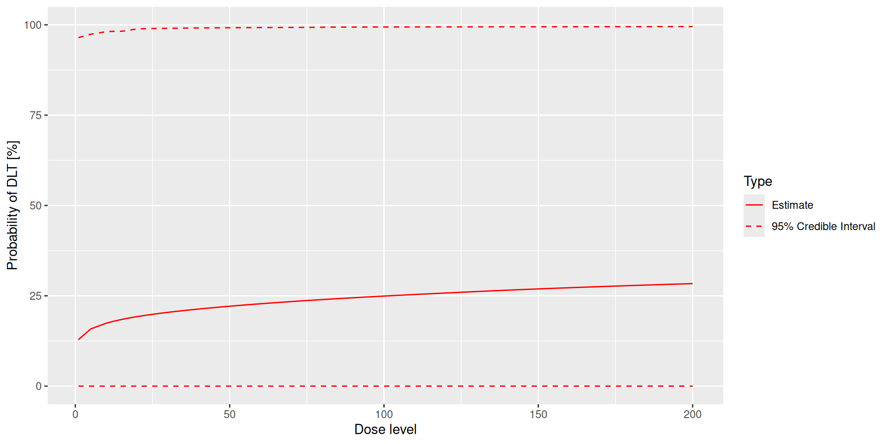
In order to evaluate the operating characteristics of our design, we need to define some toxicity scenarios, i.e. the true dose-toxicity relationship in the population. This needs to be a function mapping a dose vector to a vector of DLT probabilities. This could be:
For example:
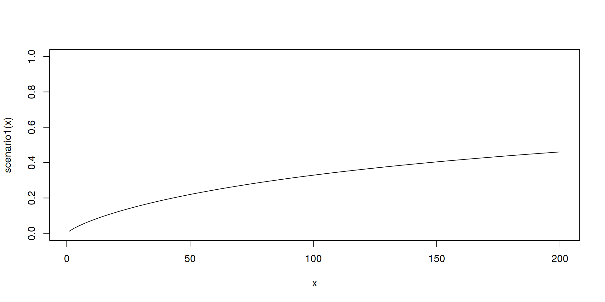
Now given the design and the toxicity scenario, we can run simulations with the simulate method:
Especially in oncology trials, it is meanwhile common to open backfill cohorts at lower dose levels while the escalation cohorts are still ongoing at higher dose levels. Recently this was implemented in crmPack with the Backfill objects.
For example:
Cohort size: A constant size of 3 participants.
Opening rule: If 1 or more cohorts have been treated in total.
Recruitment: Unlimited recruitment of backfill patients is allowed.
Total number of backfill patients: 12 backfill patients.
Priority of higher vs. lower dose backfill cohorts: lowest dose.
This can then be added in the corresponding backfill slot of the Design object:
Please note that the examine method does not yet take the backfilling into account, so it will still show the same results as before. To see the effect of the backfilling, we need to run simulations.
We can get basic summaries of the simulation results with the summary method:
Summary of 100 simulations
Target toxicity interval was 20, 35 %
Target dose interval corresponding to this was 43.1, 112.4
Intervals are corresponding to 10 and 90 % quantiles
Number of patients overall : mean 30 (30, 30)
Number of patients treated above target tox interval : mean 2 (0, 9)
Proportions of DLTs in the trials : mean 18 % (10 %, 23 %)
Mean toxicity risks for the patients on active : mean 18 % (2 %, 24 %)
Doses selected as MTD : mean 82.7 (1, 167.6)
True toxicity at doses selected : mean 27 % (1 %, 43 %)
Proportion of trials selecting target MTD: 56 %
Dose most often selected as MTD: 1
Observed toxicity rate at dose most often selected: 2 %
Fitted toxicity rate at dose most often selected : mean 4 % (2 %, 7 %)
Stop reason triggered:
≥ 30 patients dosed : 99 %
P(0.2 ≤ prob(DLE | NBD) ≤ 0.3) ≥ 0.7 : 0 %
Stopped because of missing dose : 1 %And we can also get more detailed plots of the simulation results with the plot method:
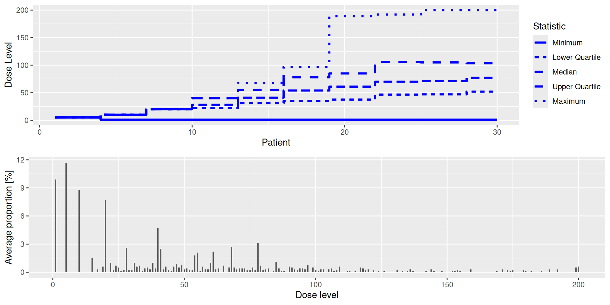
The summary result can also be plotted:
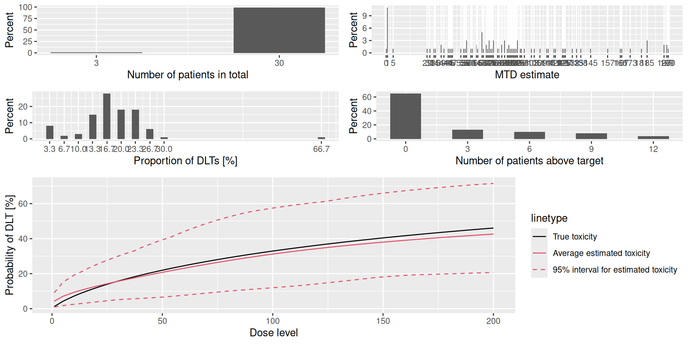
Lots of documentation is available on the crmPack website: crmPack.org
It includes: